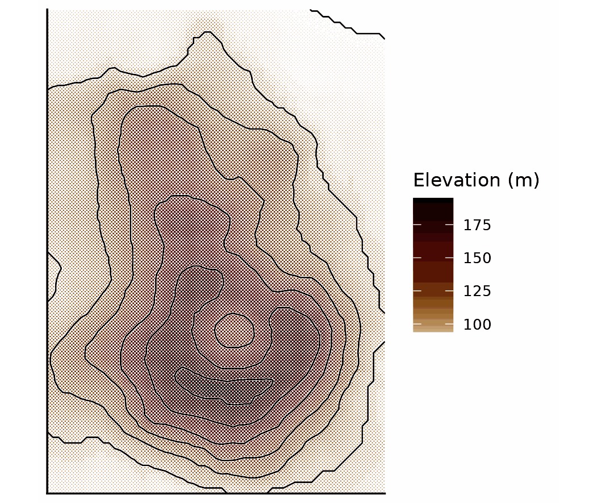
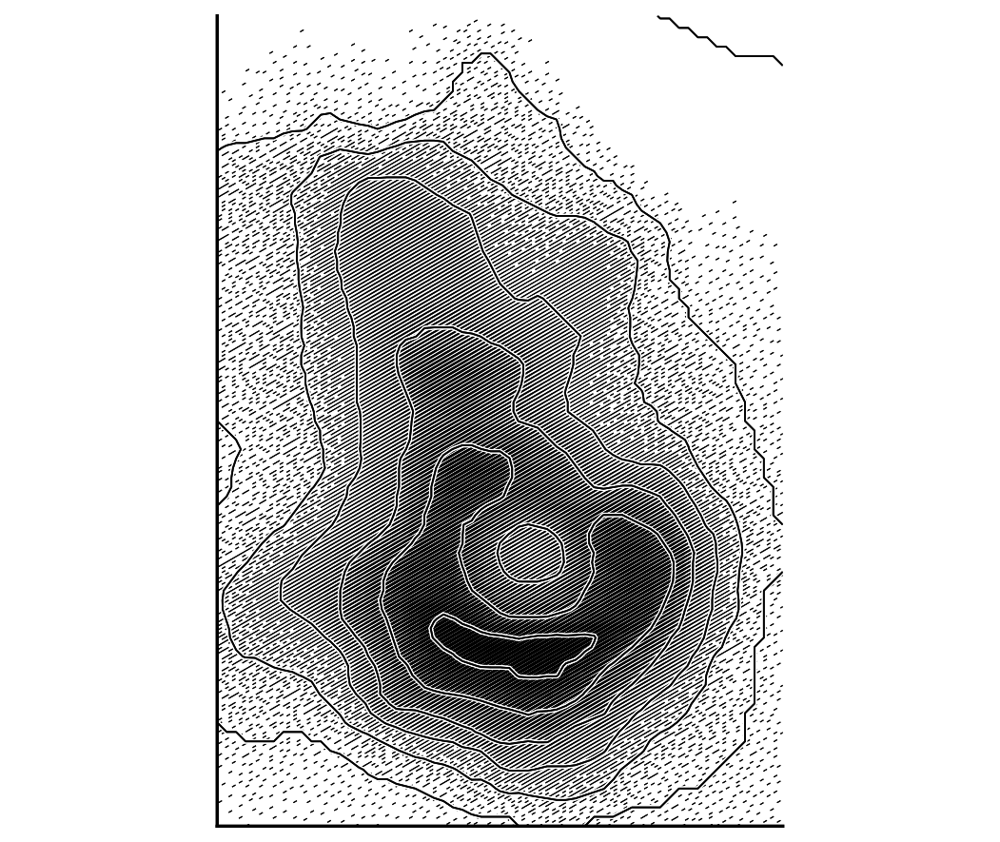
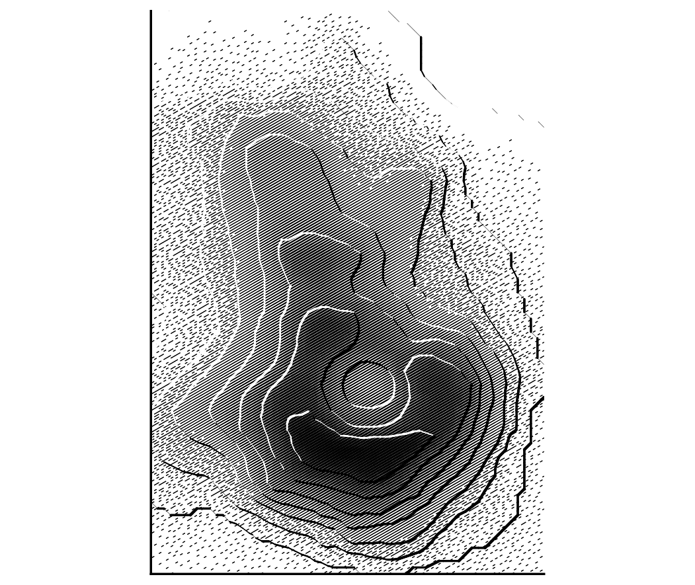
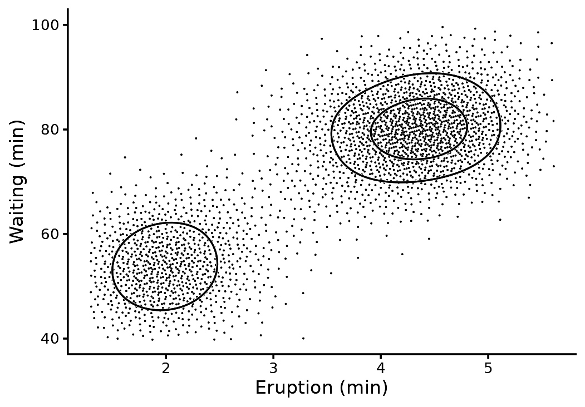
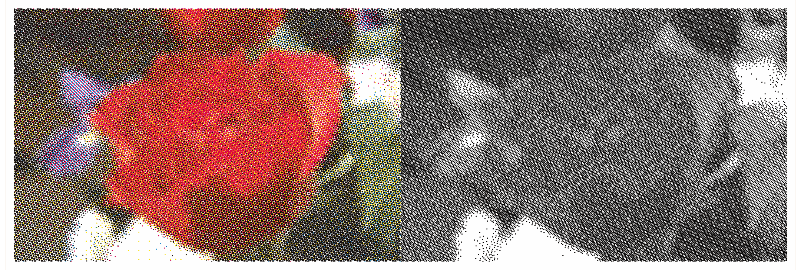
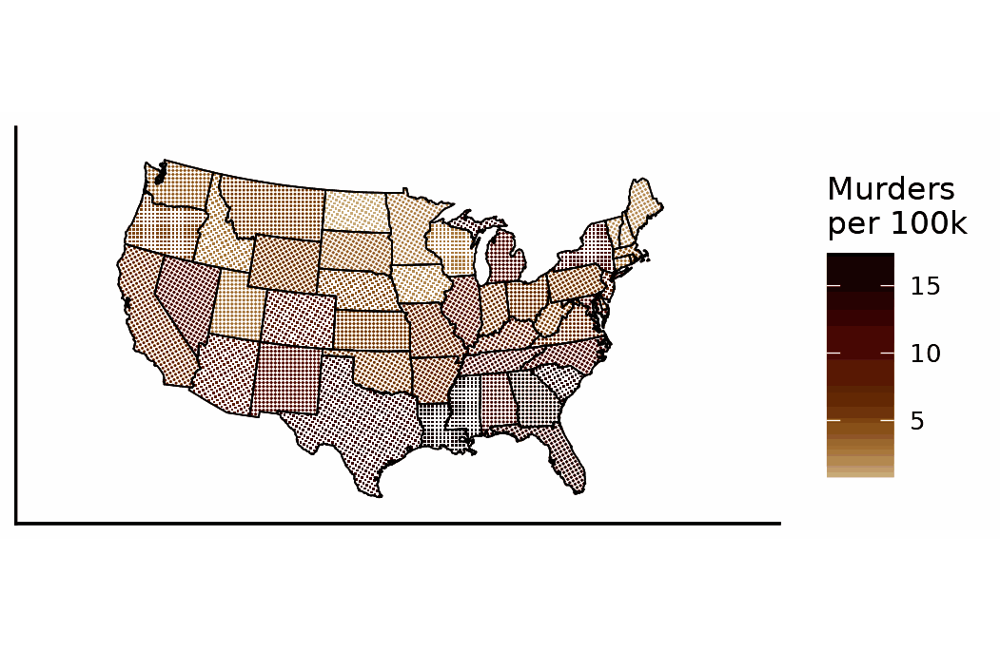
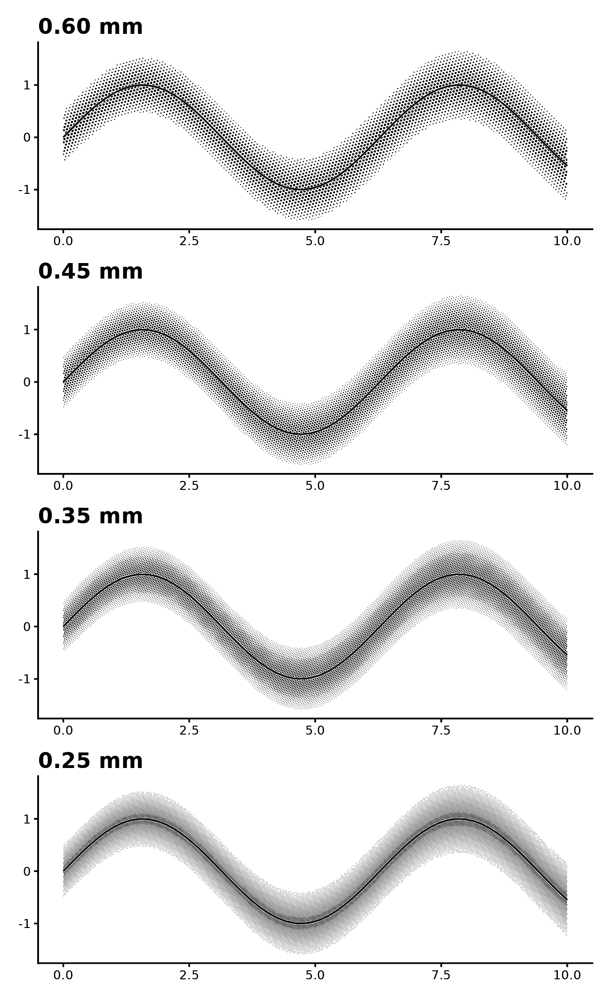
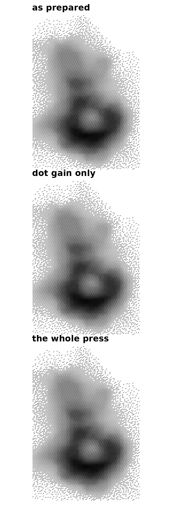

geom_halftone() takes a gridded field (x,
y and a value) and screens it directly. The examples use
the Maunga Whau elevation grid from datasets::volcano. The
area of each dot is the tone at that point. Colour scales apply to the
field, and the dots inherit the colour.
Continuous tone
ggplot(vol, aes(x, y, z = z)) +
geom_halftone(aes(colour = z), angle = 45, grid = "square", gamma = 0.6) +
with_halo(geom_contour(colour = "black", linewidth = 0.25, bins = 8)) +
coord_equal(expand = FALSE) + labs(x = NULL, y = NULL, colour = "Elevation (m)") +
theme_bw() + theme_classic(base_size = 8) + theme_halftone() + theme(axis.text = element_blank(), axis.ticks = element_blank())
The 45 degree square lattice is the conventional screen for maps and
photographs. gamma below 1 lifts the mid-tones.
Engraving
A line screen draws strips along the lattice rows. Strip width follows tone. Set the halo under the contours to 0.15 mm, because a 0.09 mm halo is invisible against hatching. Where tone falls below the printable minimum, the strips break into dashes instead of getting thinner.
ggplot(vol, aes(x, y, z = z)) +
geom_halftone(shape = "line", colour = "black", angle = 30, gamma = 1.4) +
with_halo(geom_contour(colour = "black", linewidth = 0.2, bins = 8), width = 0.15) +
coord_equal(expand = FALSE) + labs(x = NULL, y = NULL) +
theme_bw() + theme_classic(base_size = 8) + theme_halftone() + theme(axis.text = element_blank(), axis.ticks = element_blank())
Illuminated contours
with_relief() implements illuminated contours (Tanaka
1950). Each contour segment is lit or shaded according to the direction
of its slope relative to a light source, by default from the upper left.
Lit segments are drawn in paper colour and shaded segments in ink. Both
widen where the slope faces the light directly. Over an engraving, the
paper segments cut through the hatching.
The wrapper infers which side of each contour is uphill from the
neighbouring contours. light sets the light azimuth in
degrees.
ggplot(vol, aes(x, y, z = z)) +
geom_halftone(shape = "line", colour = "black", angle = 30, gamma = 1.4) +
with_relief(geom_contour(bins = 10), light = 315) +
coord_equal(expand = FALSE) + labs(x = NULL, y = NULL) +
theme_bw() + theme_classic(base_size = 8) + theme_halftone() + theme(axis.text = element_blank(), axis.ticks = element_blank())
Draw relief over a screened field. Lit segments are paper-coloured, so on bare paper only the shaded half of each contour appears.
A line over a confidence band takes with_halo(), whose
halo is symmetric because an interval has no lit side. Contours over a
surface take with_relief().
Stipple
levels = 1 with blue-noise dithering (Ulichney 1993)
gives a binary stipple. The other algorithms are ordered dithering
(Bayer 1973) and error diffusion (Floyd and Steinberg 1976). Every dot
has the same size, and dot density carries the value. Tone is capped at
55% by default, so the densest region remains a stipple rather than a
filled lattice.
kd <- MASS::kde2d(faithful$eruptions, faithful$waiting, n = 120, lims = c(1.3, 5.6, 40, 100))
dens <- data.frame(expand.grid(x = kd$x, y = kd$y), z = as.vector(kd$z))
ggplot(dens, aes(x, y, z = z)) +
geom_halftone(levels = 1, algorithm = "blue_noise", colour = "black") +
with_halo(geom_contour(colour = "black", linewidth = 0.35, bins = 3)) +
labs(x = "Eruption (min)", y = "Waiting (min)") + theme_bw() + theme_classic(base_size = 8) + theme_halftone()
Photographs
halftone_raster() reads an image into a field. Screen it
once per process ink and you get four-colour process, with the rosette
that comes from the classic screen angles. Screen the luminance with
error diffusion in one ink and you get the newspaper screen.
f <- halftone_raster(magick::image_read("rose:"), max_px = 150)
process <- ggplot() + geom_halftone_cmyk(f, pitch = 0.6, levels = 6) +
coord_equal(expand = FALSE) + theme_void(base_size = 8) + theme_halftone()
news <- ggplot(f, aes(x, y, z = z)) +
geom_halftone(levels = 2, algorithm = "floyd_steinberg", colour = "black", pitch = 0.4) +
coord_equal(expand = FALSE) + theme_void(base_size = 8) + theme_halftone()
patchwork::wrap_plots(process, news, nrow = 1)
Maps
with_halftone() on a polygon layer prints each region at
the tone of its fill colour. The default continuous ramp runs from paper
through ochre and red to near-black.
val <- setNames(USArrests$Murder, tolower(rownames(USArrests)))
st <- ggplot2::map_data("state"); st$murder <- val[st$region]
ggplot(st, aes(long, lat, group = group, fill = murder)) +
with_halftone(geom_polygon(colour = "black", linewidth = 0.2), angle = 45, grid = "square") +
coord_map("albers", lat0 = 30, lat1 = 45) + labs(x = NULL, y = NULL, fill = "Murders\nper 100k") +
theme_minimal() + theme_classic(base_size = 8) + theme_halftone() + theme(axis.ticks = element_blank()) + theme(axis.text = element_blank())
Pitch
The default pitch is 0.35 mm, or 73 lines per inch. The comparison below shows why. At 0.6 mm the screen reads as dots. At 0.25 mm it reads as a flat tint and takes about 1.8 times as long to draw.
d <- data.frame(x = seq(0, 10, length.out = 60)); d$y <- sin(d$x); d$lo <- d$y - 0.5 - 0.02 * d$x; d$hi <- d$y + 0.5 + 0.02 * d$x
one <- function(p) ggplot(d, aes(x)) + with_halftone(geom_ribbon(aes(ymin = lo, ymax = hi), fill = "black"), pitch = p) +
with_halo(geom_line(aes(y = y), linewidth = 0.35)) + labs(x = NULL, y = NULL, title = sprintf("%.2f mm", p)) +
theme_classic(base_size = 8) + theme_halftone() +
theme(plot.title = element_text(size = 11, face = "bold", margin = margin(b = 2)))
patchwork::wrap_plots(lapply(c(0.6, 0.45, 0.35, 0.25), one), ncol = 1)
Press artefacts
with_press() draws a screen as a press puts it on paper,
not as the plate describes it. It takes a layer, a plot or a patchwork;
given more than one layer, each is pressed as its own plate with its own
offset.
Everything it does makes a figure less faithful to its data, so it is off by default and outside the journal register. Use it for a plate, a poster or a cover.
Stacked rather than set side by side, and narrow to suit a portrait subject: three panels across a page leave each one too small to see the screen, which is the thing the figure is about.
one <- function(title, ...) { lay <- geom_halftone(shape = "line", colour = "black", angle = 30, gamma = 1.4, pitch = 0.6)
args <- list(...)
if (length(args)) lay <- do.call(with_press, c(list(lay), args))
ggplot(vol, aes(x, y, z = z)) + lay + coord_equal(expand = FALSE) + labs(x = NULL, y = NULL, title = title) +
theme_void(base_size = 8) + theme_halftone() +
theme(plot.title = element_text(size = 11, face = "bold", hjust = 0, margin = margin(b = 3))) }
patchwork::wrap_plots(one("as prepared"), one("dot gain only", gain = 0.3, seed = 4),
one("the whole press", gain = 0.3, slur = 0.08, fillet = 0.05, mottle = 0.16, seed = 4), ncol = 1)
gain is the trade’s tone value increase at a 50 %
screen, about 0.15 for offset on coated stock and 0.35 on newsprint. It
applies to coverage, the fraction of paper the screen inks, which is
what a densitometer reads and is not the tone the screen was asked for.
Coverage stops at the sheet, and that is what fills a shadow in.
Dot gain alone moves ink and nothing else, so on a flat field it is
close to what raising dot_max would give. The settings that
no plain figure reproduces are mottle, the slow drift in
ink density across a sheet; slur, the smear of a sheet
moving under the plate; fillet, the ink bridge surface
tension pulls where two dots meet; and registration, one
plate landing off another.
fillet acts only where dots meet, so it needs
gain above about 0.2 to give it something to bridge, and it
needs the polyclip package.
References
- Bayer, B. E. (1973). An optimum method for two-level rendition of continuous-tone pictures. IEEE International Conference on Communications, 26, 11-15.
- Floyd, R. W., and Steinberg, L. (1976). An adaptive algorithm for spatial greyscale. Proceedings of the Society for Information Display, 17(2), 75-77.
- Tanaka, K. (1950). The relief contour method of representing topography on maps. Geographical Review, 40(3), 444-456. https://doi.org/10.2307/211219
- Ulichney, R. (1993). The void-and-cluster method for dither array generation. Proceedings of SPIE, 1913, 332-343. https://doi.org/10.1117/12.152707
- Maunga Whau elevation data: R
datasets::volcano, digitised by Ross Ihaka from a topographic map of Auckland.